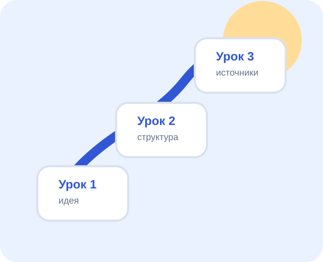

Урок 1
Знакомство с конструктором «Урсула»
Цель урока: понять, из каких шагов состоит создание 3D-мини-игры в «Урсуле».

Главная идея
«Урсула» помогает собрать 3D-игру без большого программного кода. Ученик создает проект, загружает модели, расставляет их на сцене и задает поведение объектов через диаграммы ПРИМС.
В игре есть герой, которым управляет игрок, и объекты мира: деревья, заборы, яблоки, кнопки, ворота, NPC и победная точка.
Путь проекта
- Придумать идею мини-игры.
- Создать проект на портале «Урсула».
- Загрузить 3D-модели и выбрать роли объектов.
- Расставить объекты на сцене.
- Добавить поведение через ПРИМС-диаграммы.
- Сохранить, собрать и протестировать игру.
Задания
- Придумайте короткую игру на 3-5 минут.
- Запишите цель игрока: что нужно сделать, чтобы победить.
- Составьте список объектов: герой, препятствия, интерактивные предметы, NPC, финиш.